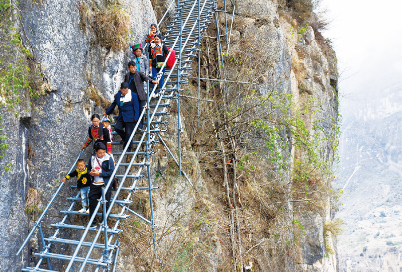
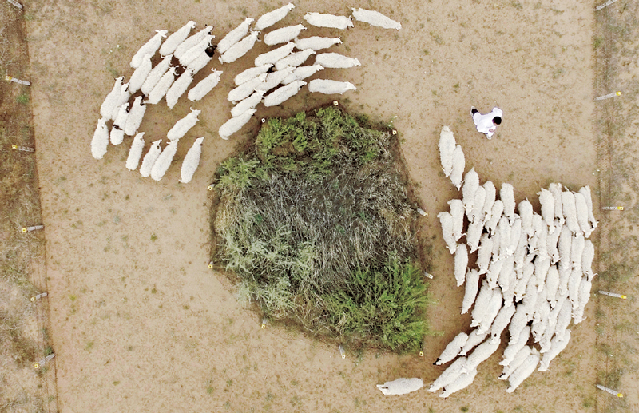
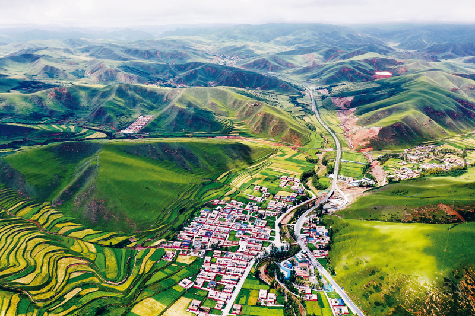

苦瘠之地脱贫记
作者：新华社
春天，踏着嵌在山壁里的 2556 级钢梯，来到四川凉山州支尔莫乡 “悬崖村”。
村民们为民宿、小卖部进的货，沿着梯子运上了 “云端”。主播们踏着钢梯，探出身子，拍摄古里大峡谷、日出云海。当旅游旺季到来，这个与地面垂直距离约 800 米的村庄，每天都会迎来众多游客。
向上走出了富裕，向下更走出了希望。2020 年 5 月，阿土列尔村 84 户建档立卡贫困户共 344 人，陆续搬迁至位于昭觉县县城周边的易地扶贫搬迁集中安置点的新家。
改变 “悬崖村” 命运的，是一场中华民族历史上前所未有的反贫困伟业。
党的十八大以来，以习近平同志为核心的党中央团结带领全党全国各族人民，把脱贫攻坚摆在治国理政突出位置，充分发挥党的领导和我国社会主义制度的政治优势，采取了许多具有原创性、独特性的重大举措，组织实施了人类历史上规模最大、力度最强的脱贫攻坚战。
千百年来 “山远天高烟水寒” 的苦瘠之地，蜕变，正在发生。
藤路 钢路 幸福路
2020 年 5 月 13 日清晨，51 岁的某色达体比往常起得早些。
阳光斜斜地照进这座位于海拔 1000 多米的半山台地上的小院，钻进门缝，照亮黑洞洞的堂屋。
他扫净火塘灰烬，拉上院门，走出几步，又回头看了一眼破旧的老屋。今天，他和妻子就要下山，不再回来。
从土地肥沃的川西平原向西而去，山势陡然而起。大地的褶皱中镶嵌着四川凉山州最苦瘠的村庄。某色达体所在的昭觉县支尔莫乡阿土列尔村勒尔社，就是其中之一。
它更广为人知的名字 “悬崖村”，得名于那段由藤条和木棍编成的“天梯”。以前，村民进出这个挂在半山上的家，要顺着天梯爬两三个小时。贫穷“锁” 住了大山，大山也 “锁” 定了贫穷。“过去勒尔社行路难，姑娘们要嫁进村来，都要掂量掂量。”阿土列尔村村支书某色吉日说。
背苞谷下山去卖，同样的货，收购商偏要给 “悬崖村” 压压价。“知道我是从山上下来的，不可能再背回去。”某色达体说。
2016 年，凉山州、昭觉县投入 100 万元，建成宽 1.5 米、由 6000 多根钢管组成的钢梯。
那年 1 月，阿土列尔村山羊养殖专业合作社成立，“路” 好了，销路不愁了。2016 年种下的脐橙树，2019 年开始成为村民的重要收入来源。村里大棚好几亩，种的不是苞谷，而是三七，还用上了滴灌技术。
2020 年 5 月 13 日，“悬崖村” 村民沿着钢梯下山，准备搬进新家
随着移动基站建成，村里实现 4G 网络全覆盖，再也不用 “爬到山顶找信号”。无人机成为医务室药柜补充药品的工具，单次往返仅需 10 分钟。幼教点、医疗点也有了，小娃娃在村里免费读幼教点，大娃娃下山读小学，条件不比县城差。
“悬崖村” 名气越来越大，2019 年这里的游客量近 10 万人次，村民们通过开小卖部、接待食宿等方式获得旅游收入近百万元。
钢梯建好不到 4 个月，村里已迎娶 6 位外村新娘。“以后村里的喜事会更多。” 某色吉日高兴坏了。
借助网络，能 “飞檐走壁” 的某色拉博成了网红，拍摄的微视频点击量上千万。
搬迁下山的路上，某色达体和众人的行李很简单，只有铺盖和衣服，“新家里什么都有”。几十公里外，设施齐全的新居正等着他们。下一步，当地将通过土地 “增减挂” 等方式，让更多人搬下悬崖，村里保留部分老屋发展旅游。
从藤梯到钢梯，再到楼梯，“悬崖村”的路越走越宽。在全国，成千上万个像 “悬崖村” 这样的贫困村正在走上自己的新路。
这变迁的背后，是习近平总书记代表全党作出的庄严承诺：“全面建成小康社会，一个也不能少；共同富裕路上，一个也不能掉队。我们将举全党全国之力，坚决完成脱贫攻坚任务，确保兑现我们的承诺。”
党的十八大以来，以习近平同志为核心的党中央引领广大干部群众，不断把精准扶贫、精准脱贫方略推到细处、落到实处、引向深处——
层层签订责任书，逐级立下军令状，建立了各负其责、各司其职的责任体系；
千方百计扶，真金白银投，搭建了保障资金、强化人力的投入体系；
智力帮扶 “授渔”，牵线搭桥 “造血”，打造了因地制宜、因村因户因人施策的帮扶体系；
聚全国之力、汇全民之智、集各方之志，构筑了广泛参与、合力攻坚的社会动员体系……
从昆仑山深处的石土房中搬出来的热萨来提 · 里提甫，站在新房前细数新日子：砖房能遮风避雨，自来水即开即用，“以前路太远，最怕的就是生病。现在生活方式健康了，病少了，乡卫生院就设在家门口”。
近 5 年，约 6000 亿元资金投入，22 个省份近 1000 万贫困群众，像热萨来提 · 里提甫一样，从偏远山区搬进新家，摆脱了 “一方水土养活不了一方人” 的困境。
“阿姨好！叔叔好！” 凉山州昭觉县洒拉地坡乡姐把哪打村的幼教点，童音驱散了山间寒意。虽然位于大凉山腹地，这些三四岁的孩子却讲着标准的普通话。当地因文化程度低而难以摆脱贫困的魔咒，正在下一代中打破。
截至 2020 年 9 月 15 日，全国义务教育阶段辍学学生由 60 万人降至 2419 人，其中建档立卡贫困家庭辍学学生由 20 万人降至 0 人。
山西省岢岚县，随着整村搬迁，被风湿性心脏病和高血压折磨了大半辈子的王三女，从土坯房搬进了新楼房，还有家庭医生常常上门送医送药。2019 年，王三女住了两次医院，总费用 8914.3 元，通过医保报销，自己只花了 525.77 元。年近七旬的她感慨：“赶上了好时代，是咱最大的福气。”
王三女只是脱贫攻坚战打响以来，1500 万得到救治的贫困大病和慢病患者中的普通一员。这背后，不仅是村村都有卫生室和村医，更是所有农村贫困人口医保制度实现全覆盖。
更多的改变，体现在一个个看似枯燥的数字背后——累计新建改建贫困地区农村公路 50 多万公里，具备条件的建制村全部通硬化路；农网供电可靠率达到 99%；深度贫困地区贫困村通宽带比例达到 98%；2522 万贫困人口享受低保政策…… 贫困地区群众出行难、用电难、上学难、看病难、通信难等长期没有解决的老大难问题普遍解决。
一度电、一里路、一根网线，最终鼓起了老百姓的腰包——全国建档立卡贫困户人均纯收入由 2015 年的 3416 元增加到 2019 年的 9808 元，年均增幅 30.2%。
“金钥匙” 正在解开千百年来紧锁的 “穷铁链”。
一方水土 “富养” 一方人
这几年，毛乌素沙漠南缘的人都知道，小康路上奔出了一匹 “黑马”。
先是建档立卡户靠养羊挣了 20 万元，成了宁夏盐池县街头巷尾谈论的大事。没过多久，这个 “河陇咽喉” 之地自己上了头条。2018 年，在这个广阔、干旱的荒漠草原，盐池县第一个脱贫“摘帽”。
气候干旱、生态脆弱，最困难时，盐池人嘴里的一口糠馍馍都需要国家返销。到 2013 年底国家提出精准扶贫时，全县贫困发生率仍高达 23%，贫困人口近 3.3 万人。
土窝窝靠啥成了金窝窝？羊!
作为地理标志产品，盐池滩羊肉质鲜美、温补气血，一根羊鞭子在当地人手里挥了几百年。
但在以前，羊不值钱。
产量低、受市场环境影响大，让滩羊 “好东西卖不上好价钱”。回想起 2015 年的羊价，盐池县大水坑镇新泉井村的李自新还要捏一把汗：“从没见过羊肉行情那么差的年景，好多养殖户赔得只能转行。”
“我们要瞄准中高端市场，不断提升品牌知名度和附加值，最终实现‘盐池滩羊难得一尝’的目标。” 盐池县农业农村局局长曹军说。
2016 年，盐池县构建起品牌发展战略体系，加大资金扶持力度，提高组织化、标准化，狠抓科技养殖。盐池滩羊肉走上了二十国集团杭州峰会、2017 年金砖国家领导人会晤等国宴的餐桌。
几年过去，盐池滩羊肉价格翻了倍，贫困户收入 80% 以上来自以滩羊为主导的特色产业。
打赢脱贫攻坚战，产业扶贫是习近平总书记反复强调的重要抓手。2018 年 10 月 23 日，他在广东清远市连江口镇连樟村考察时说，产业扶贫是最直接、最有效的办法，也是增强贫困地区造血功能、帮助群众就地就业的长远之计。
2019 年 7 月 15 日，在内蒙古赤峰市喀喇沁旗河南街道马鞍山村，习近平总书记再次强调，产业是发展的根基，产业兴旺，乡亲们收入才能稳定增长。
市场机制、产业要素在政府统筹、社会助力下，向各个 “苦甲天下” 之地汇聚。
缺技术，研。云南澜沧县的 “院士小院” 让庄稼种出了科技含量，东西部科技扶贫协作解决了一系列 “卡脖子” 技术难题。
缺链条，补。西藏、青海的青稞，生长在高海拔地区，品质好，有降糖等功用，当地主打健康牌，形成青稞生产、加工、销售的完整产业链。
缺企业，找。河南兰考县，引进一批适合在当地发展的企业，有的还是上市公司。产业发展起来了，3 年时间，7 万多人脱贫。
缺人才，请。脱贫攻坚战打响以来，各地组建了 4100 多个产业扶贫技术专家组，聘请产业发展指导员 26 万人……
新疆的核桃、贵州的刺梨、四川的花椒、甘肃的油橄榄…… 贫困地区特色产业不断壮大，产业扶贫、电商扶贫、光伏扶贫、旅游扶贫等较快发展。
“只要有信心，黄土变成金” 正成为现实——建档立卡贫困人口中，90% 以上得到了产业扶贫和就业扶贫支持，2/3 以上主要靠外出务工和产业脱贫，工资性收入和生产经营性收入占比上升，转移性收入占比逐年下降，自主脱贫能力稳步提高。
在习近平总书记 “坚持以脱贫攻坚统揽贫困地区经济社会发展全局” 的引领下，人流、物流、资金流、信息流滚动起来，补足了贫困地区经济社会发展的“气血”。
发展，是摆脱贫困的根本途径。一方水土 “富养” 一方人的脱贫新图景徐徐展开。
宁夏吴忠市盐池县花马池镇，返乡创业大学生冯欢在羊场里的滩羊跑道上驱赶羊群 “跑步锻炼”。
随着产业壮大，贫困地区经济活力和发展后劲明显增强。通过生态扶贫、易地扶贫搬迁、退耕还林还草等，贫困地区生态环境明显改善，贫困户就业增收渠道明显增多，基本公共服务日益完善。贫困县国内生产总值年均增速高出全国平均水平 2 个多百分点，发展差距逐步缩小。
通过滩羊入圈饲养、育林育草，这些年，盐池县生态环境也大为改观，草场面积、植被覆盖率明显提高。不仅摘掉贫困县的帽子，盐池县还被评为 “全国绿化先进县”。“看，老鹰！许多消失的野生动物，都回来了。” 当地人说。
“致富不致富，关键看干部”
暮色渐浓，天空飘起小雨。俄科罗村村民和坡益刚从苞谷田里劳作回家，就听到一阵敲门声。敲门的是云南怒江傈僳族自治州社科联副主席祝培荣。他的另一个身份，是怒江州俄科罗村拉谷片区易地扶贫搬迁工作队队长。这已是他第四次来和坡益家，为的还是那件事——搬家。
作为 “三区三州” 深度贫困地区，“看天一条缝，看地一道沟，出门靠溜索，种地像攀岩”曾是怒江州的真实写照。和坡益的家在海拔 2000 米的高山上，行路难、增收更难。种菜、养鸡、干零活，就是一家人吃饭的全部指望。但安土重迁的思想根深蒂固，说起搬，“舍不得也放不下”。
为了解除老乡的后顾之忧，挪穷窝、断穷根，2020 年 2 月，怒江州组建了 15 支 “背包工作队” 进村入组动员搬迁。祝培荣所在的工作队是其中之一。他们时常要走几十里山路，才能找到 “最后一户”，自带行李，边干农活边做工作。背包里“背” 的不仅是被褥，更是政策和责任。
“下去之后什么都要买，没有钱可咋办？” 和坡益不放心。祝培荣拿出傈汉双语版的政策文件和安置点的户型图，用傈僳语讲政策、算大账，“安置点有扶贫车间、有公益岗位，任你们选择”。思考良久，和坡益终于同意下山看看。站在宽敞明亮的新房前，和坡益动心了，马上领了钥匙。妻子很快申请到一份保洁员的公益性岗位。
真心暖人心。“十三五” 期间，怒江州纳入国家易地扶贫搬迁任务为 95859 人，已全部搬迁入住。“党员干部用脚下的泥、身上的汗、心中的情，换来贫困群众更好的生活，值！” 祝培荣说。这份责任，其来有自。
2015 年 11 月，北京京西宾馆。中央扶贫开发工作会议在这里举行，中央政治局常委全部出席。会上，22 个中西部省区市主要负责人，在脱贫攻坚责任书上签下自己的名字，向党中央立下 “军令状”。
“致富不致富，关键看干部。” 这是习近平总书记始终坚持的观点，“要注重选派一批思想好、作风正、能力强的优秀年轻干部和高校毕业生到贫困村工作。”
脱贫攻坚战打响以来，全国共派出 25.5 万个驻村工作队、累计选派 290 多万名县级以上党政机关和国有企事业单位干部到贫困村和软弱涣散村担任第一书记或驻村干部。
对于扶贫干部如何开展工作，习近平总书记也常常给他们支招：扶贫干部要真正沉下去，扑下身子到村里干，同群众一起干，不能蜻蜓点水，不能三天打鱼两天晒网，不能神龙见首不见尾。
打攻坚战、啃硬骨头，没有严明的纪律和过硬作风不行。习近平总书记强调，“决不搞花拳绣腿，决不摆花架子”。“要实施最严格的考核评估，开展督查巡查，对不严不实、弄虚作假的，要严肃问责”。
脱贫的颜色。2020 年 8 月 12 日拍摄的甘南藏族自治州卓尼县阿子滩镇阿子滩村
过硬的作风在脱贫攻坚一线锤炼，青年干部了解了基层，学会了做群众工作，在实践锻炼中快速成长。
一双双泥鞋，丈量着山间的路；一本本笔记，记载着心里的暖。有人 “三过家门而不入”，有人克服病痛坚持上岗，甚至有人将生命献给了脱贫事业……
2020 年 3 月，在决战决胜脱贫攻坚座谈会上，习近平总书记指出：“我们推进抓党建促脱贫攻坚，贫困地区基层组织得到加强，基层干部通过开展贫困识别、精准帮扶，本领明显提高，巩固了党在农村的执政基础。”
如今，不少 “背包工作队” 队员成了村民最信赖的朋友，“党派来的好干部”、“脱贫致富的领路人”得到大家由衷赞叹。
更好的日子还在后头
如果问甘肃省甘南藏族自治州碌曲县阿拉乡田多村村民东努，哪一刻感到真正融入了现代生活？他的答案是：用上了干净的厕所、淋浴室。
“热水一开就有，厕所随用随冲，和城里一样！” 东努说。
就在几年前，这还是他不敢想的。农牧村脏乱差积习根深蒂固，垃圾随处可见，“人与牲畜住一起，家里家外泥汤汤”。
“摆脱贫困，不能只是盖个新房子，生活方式、生活状态、生活观念依然一片狼藉，这可不行！” 甘南州委书记俞成辉说，“我们要做的，是以摆脱贫困为切入点，不断激发人民对美好生活的不懈追求。”
2015 年，甘南州开始 “环境革命”，从草原治理到灶台。
记者在甘南藏区经常看到这样的情景：干部们下乡，手里拿着一把垃圾钳，做给群众看，带着群众干；有干部抽完烟把烟头一扔，走了几步忽然又折回来，捡起烟头装进兜里。
几年过去，甘南草原垃圾少了，弥漫的青草气息扑面而来。牧民家里，“地上落上根羊毛都忍不住捡起来”。
“坚持以促进人的全面发展的理念指导扶贫开发。” 习近平总书记说。
2018 年 2 月 11 日，春节前夕，习近平总书记来到四川凉山州昭觉县三岔河乡三河村看望慰问群众。围坐在火塘边，一位彝族村民告诉总书记，以前她生病，总以为是有鬼附身，后来村干部告诉她，“鬼” 就是那些不讲卫生滋生的病菌，只要改变生活习惯，就会少生病。
听了她的讲述，习近平总书记风趣地说，过去的确是有 “鬼” 的，愚昧、落后、贫穷就是 “鬼”。这些问题解决了，有文化、讲卫生，过上好日子，“鬼” 就自然被驱走了。
如今，搞旅游、民宿，比的是谁家院落更干净，哪里的村道更整洁；易地搬迁，从深山到城镇，老乡们会用马桶了，不随手丢垃圾、不随地吐痰了；就业培训，从烹饪到守时守规、“对不起”、“谢谢”…… 一系列技能 “打包放送”，补足了现代生活的文明常识。
生活方式要变，意识贫困、思想贫困的 “鬼” 更要赶。
“靠着墙根晒太阳，等着别人送小康” 正变成 “宁愿苦干不愿苦熬”。敢想敢干、敢于追梦，在贫困群众心里扎下根。
在贵州台江县阳芳村举行的党的十九大精神宣讲会上，十九大代表吴水根的话引得在场干部群众热烈鼓掌：“人要伸手才能摘到树上的果，躺着等果子掉下来，等不到的。发展致富的道理也一样，靠在墙根等扶贫，别人帮、你在看，富不起来。”
在西藏聂荣县，从不知名的施工队队长到脱贫致富模范，赤加带领当地群众成立劳务输出公司，培训建档立卡贫困户富余劳动力，实现转移就业脱贫。
在南疆四地州，从昆仑山腹地易地搬迁而来的买合肉甫 · 木拉吧一家五口已经开始了新生活，变化最大的要数三个孩子。“孩子们走出大山，接触的人多了，视野宽了，如今有要当兵的，有要当医生的，这是我在过去从来没听他们说过的。” 妻子热娜古丽 · 喀尔曼感慨道。
在这场规模最大、力度最强的反贫困斗争中，越来越多的人对改变自身命运有了底气，切切实实领悟到习近平总书记这番话的分量：“脱贫只是第一步，更好的日子还在后头。”
自从搬出大山，买合肉甫 · 木拉吧和热娜古丽 · 喀尔曼夫妻俩就达成一个共识：每人每天拿出 100 元作为 “家庭发展基金” 存下来。
“多存点钱，以后孩子们上大学会用得着。” 买合肉甫 · 木拉吧说。
那个有 “好日子” 的以后，就在不远的将来。
“要坚决守住脱贫攻坚成果，做好巩固拓展脱贫攻坚成果同乡村振兴有效衔接，工作不留空档，政策不留空白。” 在最近召开的中央农村工作会议上，习近平总书记这样强调。